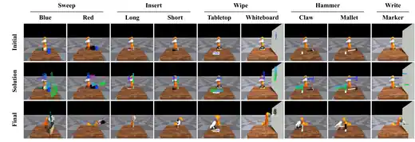

ToGo: Planning Dexterous Tool Use via Tool-Centric Functional Goal-Trajectory Generation
ToGo represents dexterous tool use through functional tool geometry and tool–environment interaction constraints. A VLM-grounded geometric planner identifies functional tool parts and scene targets, then compiles them into staged SE(3) tool-pose goals for execution.